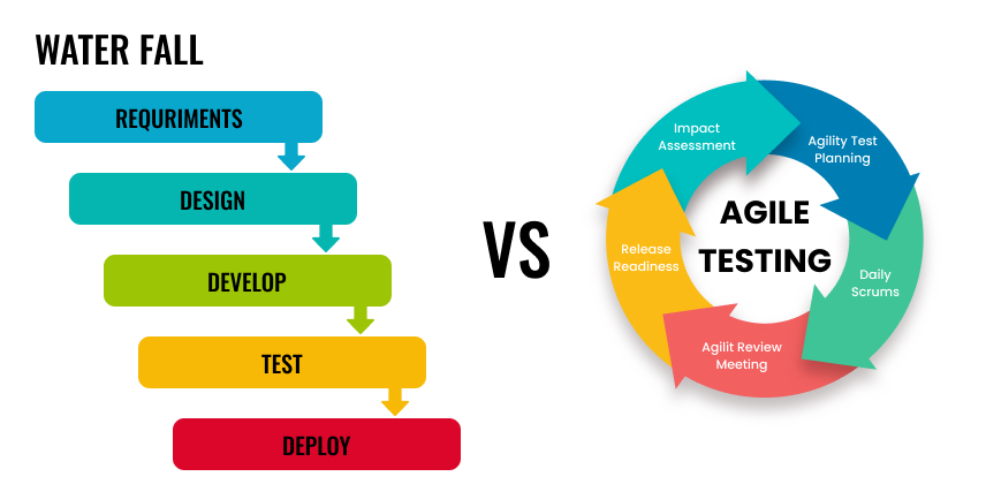

SDLC
Software development lifecycle (SDLC) refers to the general stages a project goes through from an initial idea to a finished product. The two examples are the most common approaches used: Waterfall and Agile.
A simplified software lifecycle:
- Plan — Decide what needs to be built.
- Build — Create the software.
- Test — Find and fix problems.
- Release — Deliver the software.
- Improve — Make changes based on feedback.